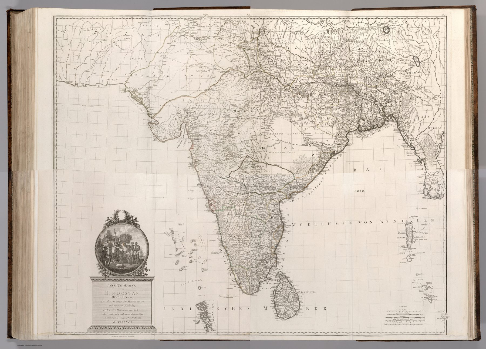

Rennell translated into Vienna
Franz Anton Schrämbl issued this four-sheet map for his Allgemeiner Grosser Atlas, the first major commercial atlas produced in Austria. Its title advertises roads, passes and the detailed division of British possessions in the East Indies, and expressly names ‘Jakob Rennell’ as its authority.
Plate date and atlas date
The map bears the date 1788, while Schrämbl’s immense atlas was completed and published as a whole in 1800. The project appeared in parts over many years. The plate therefore records both the rapid reception of Rennell and the slower manufacture of a monumental atlas.
Copying as circulation
Re-engraving translated British Company knowledge into German, enlarged it for a Central European audience and detached it from the institutional setting in which the surveys were made. What began as strategically privileged information became a commodity in the international atlas market.
The gaze
‘Jakob Rennell’ on a Vienna title page is the whole story. An Austrian publisher put a Company surveyor’s name forward as a guarantee, and his customers accepted British roads, passes and possessions as the current state of geography. The survey’s authority travelled faster than the atlas that carried it.